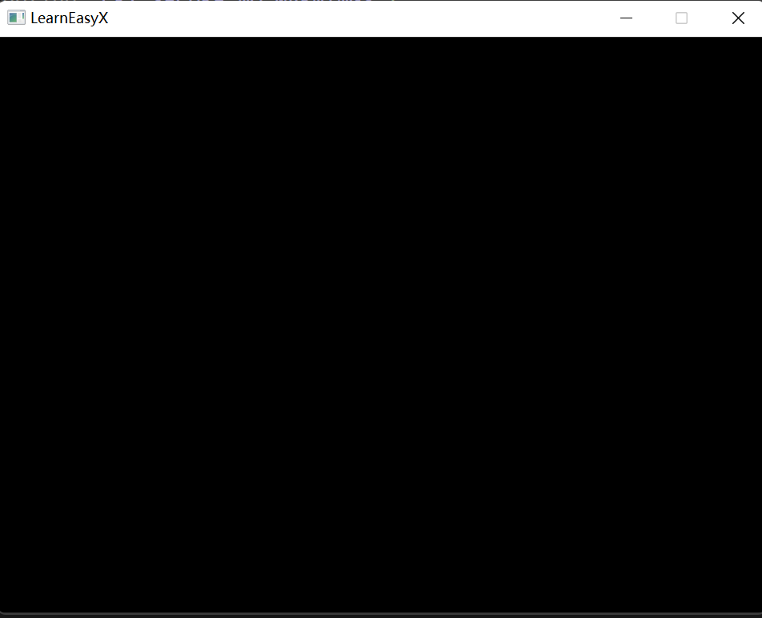
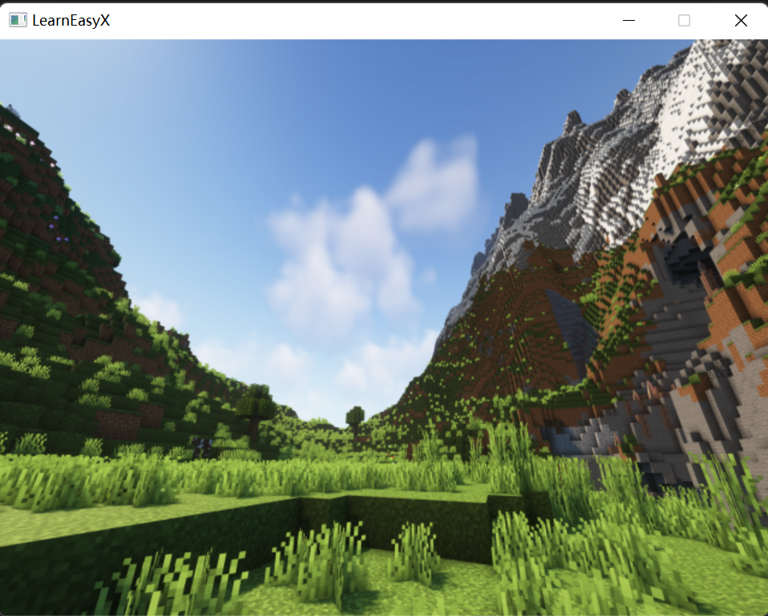

C工程项目1： 贪吃蛇项目 v0_0_1
贪吃蛇制作详解1
文档v0.0.1
很有趣的是，这是我制作的第一个 C 语言的小项目，我清楚的记得这是我在逸夫楼第三阶梯花费了3个小时的时间构思+ coding 的，作为一个入门编程的萌新而言，这有点许些不容易，不管怎么说，我还是完成了它！
基础结构
我们将会使用 EasyX 这个入门的图形库。
描述贪吃蛇这个游戏，那很显然，要有蛇，要有食物，也要有减肥餐（认真）。但是，我们要在一个二维的平面刻画他们的关系，那我们就需要一个二维的平面来刻画这样的关系：
我们当然可以类似 Opencv 里的 Point 类来高仿一个轮子,来刻画一个平面，不如说是一个二维点
typedef struct _PointPlat_{
int x;
int y;
}PointPlat;
//允许我使用int而不是double,我们只是用它来给我们的对象刻画位置的 那么下面，就是刻画工程的主角：蛇了：
typedef struct _Snake_{
size_t segmentSize; // 蛇的节数
char directions; // 蛇的方向
PointPlat segPlace[MAX_SEGMENT]; // 蛇的节段坐标数组（懒得动态）
}Snake； 我想这样蛇就OK了
以及我们的两类食物：
typedef struct _Food_{
PointPlat foodXY; // 食物在哪里
int score; // 吃了多少分
bool whetherFoodExist; //它现在在吗？我们有必要在下一次循环中来生成一个食物
}Food; 还有一个：
typedef struct _LoseWeightFood_{
PointPlat loseWeightFoodXY; // 食物在哪里
int score; // 吃了多少分
bool whetherLWF_Exist; //它现在在吗？我们有必要在下一次循环中来生成一个食物
}LoseWeightFood;开始设计菜单
我们先不搞花里胡哨的，先使用 initgraph 函数（In EaxyX）来生成一个窗口：
initgraph(int Length, int Height) 当然，太难看了
setbkcolor(RGB(0,0,255)); 生成一个纯蓝背景（先别急，俺也知道不好看哈哈哈）好吧，我们写一个插入图片的版本，
IMAGE pic;
loadimage(&pic,_T("PATH"),int height,int width); 设计一个菜单,显然他是一个既不需要输入也不需要输出的函数！
void menu(); 不过，似乎现在没什么需要显示的必要，先空在这里！
开始放点东西！
我们要开始给我们的窗体布置东西了！我们首先先试着放东西：
蛇
我们开始给我们的蛇做一点初始化：
我们的蛇最好是有三个字节：那就是说首先我们的结构体成员变量：
psnake -> segmentSize = 3; 其次，也有准备初始化相关的坐标：
psnake->segPlace[2].x = 20;
psnake->segPlace[2].y = 0;
psnake->segPlace[1].x = 30;
psnake->segPlace[1].y = 0;
psnake->segPlace[0].x = 40;
psnake->segPlace[0].y = 0;
//他们都是右上角的点的坐标，后面的绘图问题我们将单独引入一个 EaxyX库来绘图 最后，蛇当前的方向应该要被制定：
psnake->directions = Right;// temperately this. we will define them later 这样我们的初始化就完成了：
void initSnack(Snake* psnake)
{
psnake->segPlace[2].x = 20;
psnake->segPlace[2].y = 0;
psnake->segPlace[1].x = 30;
psnake->segPlace[1].y = 0;
psnake->segPlace[0].x = 40;
psnake->segPlace[0].y = 0;
psnake -> segmentSize = 3;
psnake->directions = Right;
}食物与减肥餐
我们还是注意到食物应当是任意出现的，这就涉及到随机库的使用，在C语言中，我们需要手动制定一个随机工厂函数：
以随机返回一个 int 类型的作为一个例子
int getRandNum(int minRange, int maxRange)
{
srand((unsigned int)time(NULL));
return rand() % maxRange + minRange;
} 扩展以下，如果希望快速产生不一样的随机数，请使用这个模板，因为前者以秒作为刷新单位，后者则是以CPU时间作为基准计算
int getQuickContiniousRandNum(int minRange, int maxRange){
srand((unsigned int)clock());
return rand() % maxRange + minRange;
} 这样，我们就拿到了随机数，可以确定我们生成食物的位置了！
注意到：
void randInitFoodPos(Food* pfood)
{
srand((unsigned int)time(NULL));
pfood->foodXY.x = rand() % 650 * (rand() % 30) / 30;
pfood->foodXY.y = rand() % 480;
pfood->whetherFoodExist = TRUE; // this row
}
void randInitLWFoodPos(LoseWeightFood* pLWFood)
{
srand((unsigned int)time(NULL));
pLWFood->loseWeightFoodXY.x = rand() % 650;
pLWFood->loseWeightFoodXY.y = rand() % 480;
pLWFood->whetherLWF_Exist = TRUE; // this row
} 我们将在后面阐述为什么设置这个状态栏（剧透：确定是否需要刷新食物）
绘制
我们的绘制是采用 EasyX 库来完成的！
首先介绍以下窗口幕布：
void initgraph(int height, int width) 这个函数向我们的屏幕投影一个 height 高 weight 宽的一个窗口，显然，是黑色的

好像不大好看，但是正如前面所讲，我们可以插入一个图片来解决这个问题：
#define PATH "/*你的图片地址*/"
loadimage(&pic,_T(PATH),int picHeight,int picWidth);
putimage(0, 0, &pic); 这样就好了！

随后，让我们来看看画一下蛇和食物！
针对一个一个节段，我们设置，随后使用一个for循环来完成我们的工作就OK了
void drawSnake(Snake* psnake)
{
for (int i = 0; i < psnake->segmentSize; i++)
{
setlinecolor(YELLOW);//边框色
setfillcolor(RED);
fillrectangle(psnake->segPlace[i].x, psnake->segPlace[i].y, psnake ->segPlace[i].x + 10, psnake->segPlace[i].y + 10);
}
}
void drawFood(Food* pfood)
{
setlinecolor(RED);//边框色
setfillcolor(YELLOW);
solidcircle(pfood->foodXY.x, pfood->foodXY.y, 5);
}
void drawLWFood(LoseWeightFood* LWFood)
{
setlinecolor(GREEN);//边框色
setfillcolor(GREEN);
solidcircle(LWFood->loseWeightFoodXY.x, LWFood->loseWeightFoodXY.y, 5);
}
上图就是把程序放在一起编译运行产生的结果！
动起来
下面，我们准备开始写游戏的逻辑了
1.让蛇动起来先
让蛇动起来，这是个难题，因为蛇的运动是要有方向的！我们先不考虑我们如何操纵蛇的移动，因为那需要与键盘直接交互（注意到 scanf 是肯定不可以的！那样的话游戏操作性太差了）
我们使用 For 程式的递归，让一条蛇退化成一节蛇！这样我们就可以把目光放在第一节来处理了！
for(int i = 1; i < pSnake->segmentSize ; i++)
{
pSnake -> segPlace[i].x = pSnake -> segPlace[i-1].x;
pSnake -> segPlace[i].y = pSnake -> segPlace[i-1].y;
} 目光放在第一节来处理了！注意到，如果我们的方向是向右，那么：
if (derections == RIGHT){
pSnake -> segPlace[0].x += 10;
} 我们的蛇的头就向右走，同样的，我们这里是有四个方向的。于是这里使用 switch-case语句比较好
switch(pSnake -> directions){
case RIGHT:psnake->segPlace[0].x += 10; break;
case LEFT:psnake->segPlace[0].x -= 10; break;
case UP:psnake->segPlace[0].y += 10; break;
case DOWN:psnake->segPlace[0].y -= 10; break;
default:break;
} 对于边界的处理，有人判定是到边界直接寄，但是我们这里是直接从另一边出来比较好：
if (psnake->segPlace[0].x > 640)
{
psnake->segPlace[0].x = 0;
}
if (psnake->segPlace[0].x < 0)
{
psnake->segPlace[0].x = 640;
}
if (psnake->segPlace[0].y > 480)
{
psnake->segPlace[0].y = 0;
}
if (psnake->segPlace[0].y < 0)
{
psnake->segPlace[0].y = 480;
}键盘交互
我们的蛇一旦程序跑起来，你会发现他只能一直往一个方向跑路，没办法掉头，这是件不好的事情！那么我们就：
#include<conio,h> 来引入我们键盘对控制台的直接交互.使用这个函数:
char getter = _getch(); 这样我们就可以直接向程序中输入东西了！了解到我们的蛇不可以掉头，那。。。加个if直接处理掉就好了！
void keyReact(Snake* psnake)
{
char key = 0;
key = _getch();
switch (key)
{
case right:
if (psnake->direction != left)
{
psnake->direction = right;//禁止掉头
}
break;
case left:
if (psnake->direction != right)
{
psnake->direction = left;//禁止掉头
}
break;
case up:
if (psnake->direction != down)
{
psnake->direction = up;//禁止掉头
}
break;
case down:
if (psnake->direction != up)
{
psnake->direction = down;//禁止掉头
}
break;
default: break;
}
} 当然，我们查一下键盘上：↑↓←→的ACSII值：在枚举以下就好了：
enum Directions {
RIGHT = 77,
LEFT = 75,
DOWN = 80,
UP = 72,//对应keypress
};恰饭处理
恰饭了！这怎么处理呢？
首先，那必然是蛇的节数要++了：
psnake->segmentSize++; 食物的状态要准备更新了：
pfood->whetherFoodExist = false; 判定的条件是几乎重合：
srand((unsigned)time(NULL));
if (
psnake->segPlace[0].x - pfood->foodXY.x < 10
&& psnake->segPlace[0].y - pfood->foodXY.y < 10
&& psnake->segPlace[0].x - pfood->foodXY.x > -10
&& psnake->segPlace[0].y - pfood->foodXY.y >-10
)
{
psnake->segmentSize++;
pfood->whetherFoodExist = false;
} 当然想加分的话那就：
srand((unsigned)time(NULL));
if (
psnake->segPlace[0].x - pfood->foodXY.x < 10
&& psnake->segPlace[0].y - pfood->foodXY.y < 10
&& psnake->segPlace[0].x - pfood->foodXY.x > -10
&& psnake->segPlace[0].y - pfood->foodXY.y > -10
)
{
psnake->segmentSize++;
pfood->score += 10;
pfood->whetherFoodExist = false;
} 对于减肥餐那也是一样的：
void eatLWFood(Snake* psnake, LoseWeightFood* plossfood)
{
if (psnake->segPlace[0].x - plossfood->loseWeightFoodXY.x<10 && psnake->segPlace[0].y - plossfood->loseWeightFoodXY.y<10 && psnake->segPlace[0].x - plossfood->loseWeightFoodXY.x > -10 && psnake->segPlace[0].y - plossfood->loseWeightFoodXY.y >-10)
{
psnake->segmentSize--;
plossfood->score += 100;
plossfood->whetherLWF_Exist = false;
}
}嗝屁判断
注意，我们的目光滞留在第一个节段，如果第一个节段同其他位置重复了，那就是嗝屁了！
int deathJudge(Snake* psnake)
{
for (int i = 1; i < psnake->segmentSize; i++)
{
if (psnake->segPlace[0].x == psnake->segPlace[i].x && psnake->segPlace[0].y == psnake->segPlace[i].y )//
{
return QUIT;
}
}
return MOVE_ON;
}主程序架构
积木打好了，准备并结成主程序了！
#include"Structure.h"
int judge = MOVE_ON;
int total_score = 0; //我们的分数
int input_game_start = 0; //定义速度
int count = 0; //这里下面说
Snake snake1;
Food food1;
LoseWeightFood lossfood1; 我们可以构建起选择蛇速度的程序，因为我们的程序本质上使用while循环来执行，使用Windows库里的Sleep函数可以让程序空余若干秒
Sleep(int milisecondTime)menu();
puts("请输入你想要的速度：>");
scanf_s("%d", &input_game_start);
int input = chooseSpeed(input_game_start);
getchar(); // to prevent the slash n get into the scanner! 准备对象
Snake snake1;
Food food1;
LoseWeightFood lossfood1; 为主屏幕的东西设置与初始化
randInitFoodPos(&food1);
randInitLWFoodPos(&lossfood1);
food1.whetherFoodExist = true;
lossfood1.whetherLWF_Exist = false;
initBackGround();
cleardevice();
initSnake(&snake1);
IMAGE pic;
loadimage(&pic, _T(PATH), 640, 480);
while(judge == MOVE_ON)
{
} 先刷新屏幕，去除上次的东西：
准备放上图片，判断食物有没有，没有就放上！
cleardevice();
putimage(0, 0, &pic);
if (!food1.whetherFoodExist)
{
randInitFoodPos(&food1);
}
drawFood(&food1);
if (count == 1 || count % 10 == 0)
{
if (!lossfood1.whetherLWF_Exist)
{
randInitLWFoodPos(&lossfood1);
}
}
if (lossfood1.whetherLWF_Exist)
{
drawLWFood(&lossfood1);
} 这个count 就是用来描述我们什么时候生成lossFood的！
判断有没有吃到，有没有跟键盘交互：
eatLWFood(&snake1, &lossfood1);
count = eatFood(&snake1, &food1, count);
drawSnake(&snake1);
while (_kbhit())
{
keyReact(&snake1);
} 挪动蛇屁股：
moveSnake(&snake1);
judge = deathJudge(&snake1);
Sleep(input);
total_score = food1.score + lossfood1.score; 后续处理：
closegraph();
printf("你得到了分数！：%d\n", food1.score + lossfood1.score);
printf("敲击q退出游戏！\n");
char quit = 0;
while (quit != 'q') {
scanf("%c", &quit);
getchar();
}
return 0;源文件一览：
主程序：
#define _CRT_SECURE_NO_WARNINGS 1
#include"Structure.h"
int judge = MOVE_ON;
int total_score = 0;
int input_game_start = 0;
int count = 0;
Snake snake1;
Food food1;
LoseWeightFood lossfood1;
int main()
{
menu();
puts("请输入你想要的速度：>");
scanf_s("%d", &input_game_start);
int input = chooseSpeed(input_game_start);
getchar();
randInitFoodPos(&food1);
randInitLWFoodPos(&lossfood1);
food1.whetherFoodExist = true;
lossfood1.whetherLWF_Exist = false;
initBackGround();
cleardevice();
initSnake(&snake1);
IMAGE pic;
loadimage(&pic, _T(PATH), 640, 480);
while (judge == MOVE_ON)
{
cleardevice();
putimage(0, 0, &pic);
if (!food1.whetherFoodExist)
{
randInitFoodPos(&food1);
}
drawFood(&food1);
if (count == 1 || count % 10 == 0)
{
if (!lossfood1.whetherLWF_Exist)
{
randInitLWFoodPos(&lossfood1);
}
}
if (lossfood1.whetherLWF_Exist)
{
drawLWFood(&lossfood1);
}
eatLWFood(&snake1, &lossfood1);
count = eatFood(&snake1, &food1, count);
drawSnake(&snake1);
while (_kbhit())
{
keyReact(&snake1);
}
moveSnake(&snake1);
judge = deathJudge(&snake1);
Sleep(input);
total_score = food1.score + lossfood1.score;
}
closegraph();
printf("你得到了分数！：%d\n", food1.score + lossfood1.score);
printf("敲击q退出游戏！\n");
char quit = 0;
while (quit != 'q') {
scanf("%c", &quit);
getchar();
}
return 0;
}objbehavior.cpp
#define _CRT_SECURE_NO_WARNINGS 1
#include"Structure.h"
void moveSnake(Snake* psnake)
{
//分批次处理：
//使用For递归处理2~N节数 的蛇
for (int i = psnake->segmentSize - 1; i > 0; i--)
{
psnake->segPlace[i].x = psnake->segPlace[i - 1].x;
psnake->segPlace[i].y = psnake->segPlace[i - 1].y;
}
switch (psnake->direction)
{
//72上 80下 75左 77右
case 77:psnake->segPlace[0].x += 10; break;
case 75:psnake->segPlace[0].x -= 10; break;
case 80:psnake->segPlace[0].y += 10; break;
case 72:psnake->segPlace[0].y -= 10; break;
default:break;
}
if (psnake->segPlace[0].x > 640)
{
psnake->segPlace[0].x = 0;
}
if (psnake->segPlace[0].x < 0)
{
psnake->segPlace[0].x = 640;
}
if (psnake->segPlace[0].y > 480)
{
psnake->segPlace[0].y = 0;
}
if (psnake->segPlace[0].y < 0)
{
psnake->segPlace[0].y = 480;
}
}
void eatLWFood(Snake* psnake, LoseWeightFood* plossfood)
{
if (psnake->segPlace[0].x - plossfood->loseWeightFoodXY.x<10 && psnake->segPlace[0].y - plossfood->loseWeightFoodXY.y<10 && psnake->segPlace[0].x - plossfood->loseWeightFoodXY.x > -10 && psnake->segPlace[0].y - plossfood->loseWeightFoodXY.y >-10)
{
psnake->segmentSize--;
plossfood->score += 100;
plossfood->whetherLWF_Exist = false;
}
}
int eatFood(Snake* psnake, Food* pfood, int count)
{
srand((unsigned)time(NULL));
if (psnake->segPlace[0].x - pfood->foodXY.x<10 && psnake->segPlace[0].y - pfood->foodXY.y<10 && psnake->segPlace[0].x - pfood->foodXY.x > -10 && psnake->segPlace[0].y - pfood->foodXY.y >-10)
{
psnake->segmentSize++;
pfood->score += 10;
pfood->whetherFoodExist = false;
return count + 1;
}
}
void keyReact(Snake* psnake)
{
char key = 0;
key = _getch();
switch (key)
{
case RIGHT:
if (psnake->direction != LEFT)
{
psnake->direction = RIGHT;//禁止掉头
}
break;
case LEFT:
if (psnake->direction != RIGHT)
{
psnake->direction = LEFT;//禁止掉头
}
break;
case UP:
if (psnake->direction != DOWN)
{
psnake->direction = UP;//禁止掉头
}
break;
case DOWN:
if (psnake->direction != UP)
{
psnake->direction = DOWN;//禁止掉头
}
break;
default: break;
}
}MENUfunc.cpp
#define _CRT_SECURE_NO_WARNINGS 1
#include"Structure.h"
#include<stdio.h>
#define DEFAULT 100
#define SLOW 50
#define FAST 20
//MenuFunctions
void menu() {
puts("----------------------------------------------------------------------------");
puts("请选择你想要的难度！");
puts("0:正常 1.放慢 2.加速 3.自定义");
puts("----------------------------------------------------------------------------");
}
int chooseSpeed(int input)
{
switch (input)
{
case 0: return DEFAULT;
case 1: return SLOW;
case 2: return FAST;
default:return input;
}
}initgameFunc.cpp
#define _CRT_SECURE_NO_WARNINGS 1
#include"Structure.h"
#include<stdio.h>
void initBackGround()
{
IMAGE pic;
initgraph(640, 480);
loadimage(&pic, _T("D:/Clion/default.png"),640,480);
putimage(0, 0, &pic);
}
void initSnake(Snake* psnake)
{
psnake->segPlace[2].x = 20;
psnake->segPlace[2].y = 0;
psnake->segPlace[1].x = 30;
psnake->segPlace[1].y = 0;
psnake->segPlace[0].x = 40;
psnake->segPlace[0].y = 0;
psnake->segmentSize = 3;
psnake->direction = RIGHT;
}InitFoodFunc.cpp
#define _CRT_SECURE_NO_WARNINGS 1
#include"Structure.h"
#include<stdio.h>
void randInitFoodPos(Food* pfood)
{
srand((unsigned int)time(NULL));
pfood->foodXY.x = rand() % 650 * (rand() % 30) / 30;
pfood->foodXY.y = rand() % 480;
pfood->whetherFoodExist = TRUE;
}
void randInitLWFoodPos(LoseWeightFood* pLWFood)
{
srand((unsigned int)time(NULL));
pLWFood->loseWeightFoodXY.x = rand() % 650;
pLWFood->loseWeightFoodXY.y = rand() % 480;
pLWFood->whetherLWF_Exist = TRUE;
}draw.cpp
#define _CRT_SECURE_NO_WARNINGS 1
#include"Structure.h"
void drawSnake(Snake* psnake)
{
for (int i = 0; i < psnake->segmentSize; i++)
{
setlinecolor(YELLOW);//边框色
setfillcolor(RED);
fillrectangle(psnake->segPlace[i].x, psnake->segPlace[i].y, psnake->segPlace[i].x + 10, psnake->segPlace[i].y + 10);
}
}
void drawFood(Food* pfood)
{
setlinecolor(RED);//边框色
setfillcolor(YELLOW);
solidcircle(pfood->foodXY.x, pfood->foodXY.y, 5);
}
void drawLWFood(LoseWeightFood* LWFood)
{
setlinecolor(GREEN);//边框色
setfillcolor(GREEN);
solidcircle(LWFood->loseWeightFoodXY.x, LWFood->loseWeightFoodXY.y, 5);
}deathJugde.cpp
#define _CRT_SECURE_NO_WARNINGS 1
#include"Structure.h"
int deathJudge(Snake* psnake)
{
for (int i = 1; i < psnake->segmentSize; i++)
{
if (psnake->segPlace[0].x == psnake->segPlace[i].x && psnake->segPlace[0].y == psnake->segPlace[i].y )//
{
return QUIT;
}
}
return MOVE_ON;
}Structure.h
#define _CRT_SECURE_NO_WARNINGS 1
#define MAX_SEGMENT 256
#include<stdio.h>
#include<stdlib.h>
#include<graphics.h>
#include<conio.h>
#include<time.h>
//config
#define QUIT 2
#define MOVE_ON 1
#define PATH "D:/Clion/default.png"
//定义二维平面
typedef struct _PointPlat_ {
int x;
int y;
}PointPlat;
//定义蛇这个对象
//
typedef struct _Snake_ {
size_t segmentSize; // 定义蛇的节数
char direction; // 定义当前蛇的前进方向
PointPlat segPlace[MAX_SEGMENT];// 定义蛇的段坐标
}Snake;
//食物
//
typedef struct _Food_ {
PointPlat foodXY;
int score;
bool whetherFoodExist;
}Food;
//来点减肥餐
//
typedef struct _LoseWeightFood_ {
PointPlat loseWeightFoodXY;
int score;
bool whetherLWF_Exist;
}LoseWeightFood;
//定义一下方向
//
enum Directions {
RIGHT = 77,
LEFT = 75,
DOWN = 80,
UP = 72,//对应keypress
};
//Menu函数
void menu();
int chooseSpeed(int input);
//生成食物函数
void randInitFoodPos(Food* pfood);
void randInitLWFoodPos(LoseWeightFood* pLWFood);
//生成地图函数
void initBackGround();
void initSnake(Snake* psnake);
//基于EasyX的绘画函数
void drawSnake(Snake* psnake);
void drawFood(Food* pfood);
void drawLWFood(LoseWeightFood* LWFood);
//对象行为
void moveSnake(Snake* psnake);
int eatFood(Snake* psnake, Food* pfood, int count);
void eatLWFood(Snake* psnake, LoseWeightFood* plossfood);
void keyReact(Snake* psnake);
//游戏判定
int deathJudge(Snake* psnake);